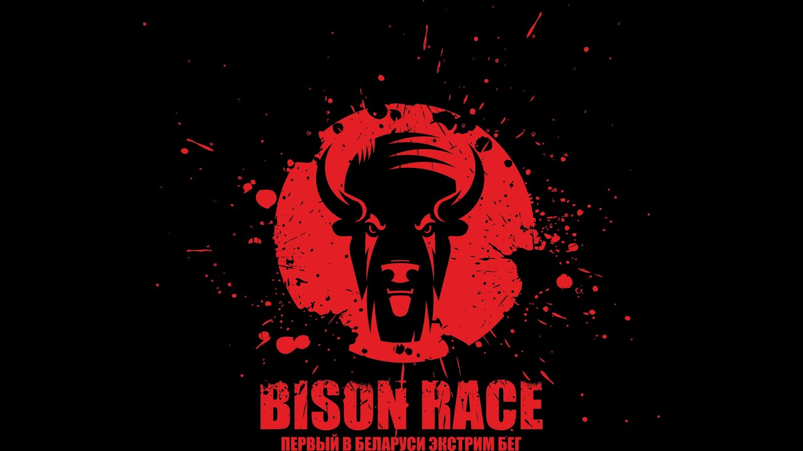

SPLIT

HISTORY
Кевин Венделл Крамб (англ. Kevin Wendell Crumb) — главный антагонист триллера Сплит (2017). Человек, страдающий от крайнего случая Диссоциативного Расстройства Личности, из-за чего его тело делят 23 личности. Сам Кевин и его большинство личностей не злы, однако двое доминирующих личностей — Деннис, навязчивый, жестокий и холодный мужчина, и Патриция, манипулятивная женщина — агрессивны и по-своему порочны. Деннис и Патриция также являются верующими в 24-ую личность — Зверя — который, по их мнению, отомстит всем "нечистым".
ЛИЧНОСТИ:
- Кевин
- Деннис

- Патрисия

- Хедвиг
- Барри
- Джейд
- Оруэлл
- Хенрик
- Норма
- Годдарт
- Берник
- Полли
- Люк
- Ракель
- Фелиция
- Ансель
- Джелин
- Кэт
- Б.Т
- Сэмюель
- Мэри
- Рэйнольдс
- Ян
- TIR


BISON RACE
Первый в Беларуси экстремальный бег с препятствиями Экстрим бег — это бег, во время которого необходимо преодолевать различные естественные и искусственные преграды. Экстрим бег зародился еще на рассвете цивилизации, когда человеку надо было в буквальном смысле слова бороться за свою жизнь, чтобы прокормить и защитить себя. Bison Race поможет вам открыть в себе инстинкты, которые заложены в каждом из нас. Важное преимущество соревнований по экстрим бегу перед обычными соревнованиями по кроссу в том, что это довольно-таки веселое занятие, и основная масса участников приходит сюда развлечься. Тем же спортсменам, которые приезжают за победой — необходимо будет хорошо потрудиться на дистанции, чтобы попасть на пьедестал. Организаторы Bison Race будут всячески стараться выжать из вас все соки.
Aliaksandr Luchanock
- 2015 год - 4 место
- 2016 год - 4 место
- 2017 год - 1 место (возрастная группа Ст.30)
- 2017 год - 2 место (абсолют)